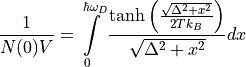
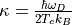
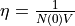
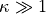

BCSGapEnergy¶
-
class
BCSGapEnergy(gap_energy_0, kappa)¶ Gap energy as calcuated from BCS theory
Solves the self consistent gap energy equation [1]

The Debye frequency is given by . For convenience we define  and .
The original BCS assumes the weak coupling limit which corresponds to . We do not make the assumption when calculting the gap energy.
- Parameters
gap_energy_0 (float) –
kappa (float) –
-
critical_frequency(temperature)¶ Get the critical frequency or gap frequency
- Parameters
temperature (float) –
- Return type
float
-
critical_temperature()¶ Get the critical temperature or transition temperature
- Return type
float
-
eta()¶ Calculate and return eta
-
evaluate(temperature)¶ Evaluate the gap energy at the specific temperature
- Parameters
temperature (float) –
- Return type
float
-
gap_energy_0()¶ Get the gap energy at T = 0 K